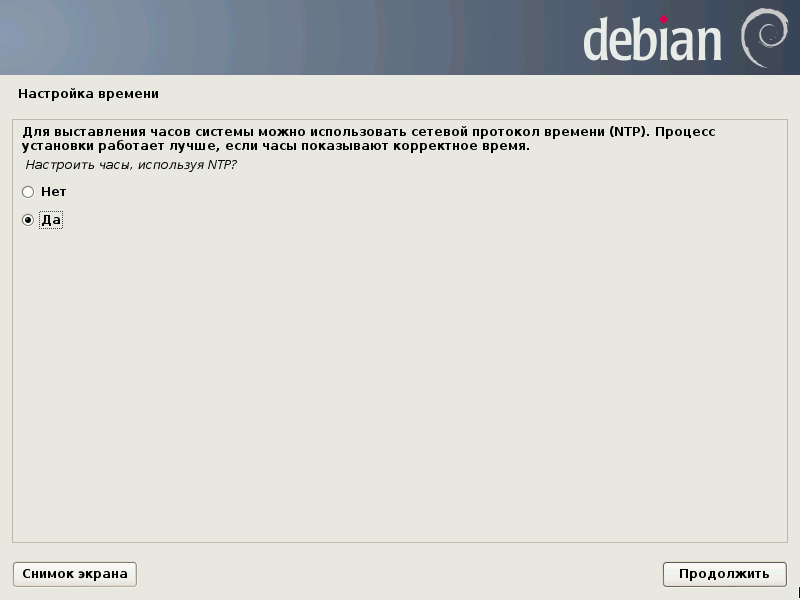
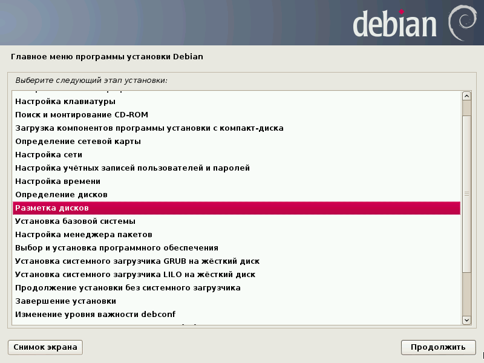
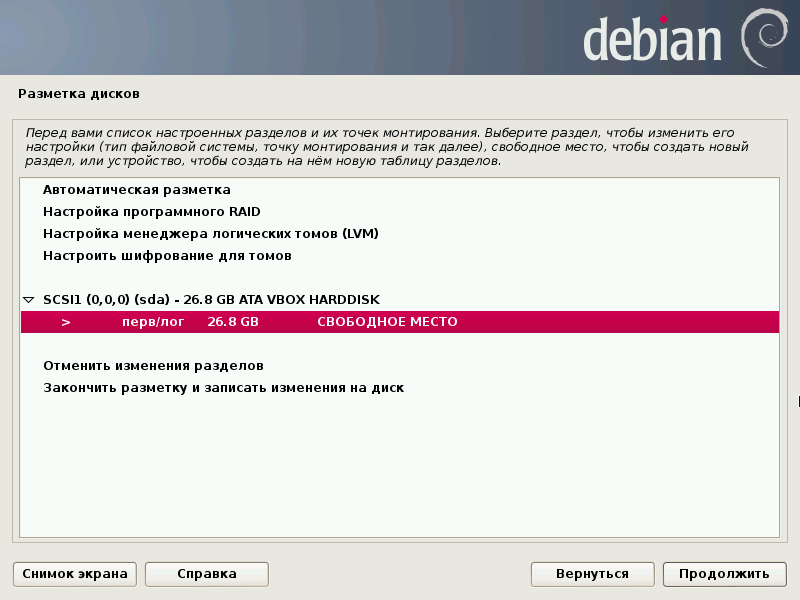
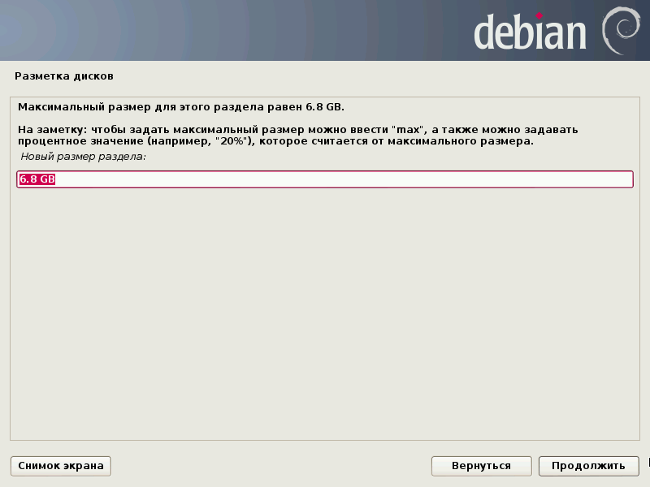
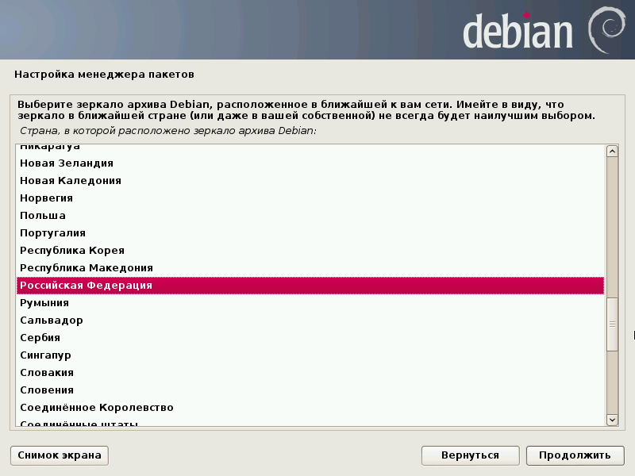
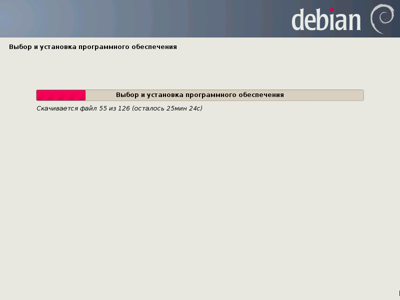

Введение
Данное руководство описывает процесс установки и настройки рабочей среды для изучения курса “Базы данных”. В качестве ОС используется Debian GNU/Linux 7 (Wheezy), СУБД — MySQL, работа в которой проводится как с помощью MySQL monitor, так и из различных программ на разных языках программирования.
Установка ОС (Debian/GNU Linux)
Текущая версия Debian — Wheezy (7.x).
Для установки достаточно скачать образ netinst CD с любого из зеркал проекта Debian, например, расположенного на Яндексе. Для этого требуется выбрать нужную архитектуру. Для современных ПК это amd64, для 32-разрядных Intel-совместимых процессоров — i386. Последний вариант годится для установки и на современный ПК (при установке в VirtualBox рекомендуется воспользоваться именно данным вариантом ввиду более экономного расходования оперативной памяти).
При установке Debian GNU/Linux следует руководствоваться официальной документацией по установке (предоставляется для разных архитектур и в разных форматах: HTML, PDF, простой текст).
При настройке установленной ОС рекомендуется пользоваться официальным руководством администратора.
Далее установка Debian рассматривается на примере инсталляции версии для архитектуры i386 в VirtualBox.
При установке на реальное железо следует внимательно заранее прочитать указанное выше руководство по установке (в частности, обратив внимание на пункты 2.2 и 6.4, иначе можно оказаться без Сети во время установки ОС). Также рекомендуется при наличии на ПК какой-либо установленной ОС (вообще при необходимости сохранения имеющихся данных на жёстком диске, на который предполагается ставить Debian) подготовить разделы диска для установки с помощью GParted Live.
Создание виртуальной машины
- Установить (в том числе, Extension Pack) и настроить Oracle Virtualbox.
- С помощью Мастера создать виртуальную машину для
Debian GNU/Linux, выделив ей виртуальный жёсткий диск объёмом 25 GB и 2 GB оперативной памяти (можно больше, если позволяют ресурсы компьютера; чем больше оперативной памяти выделить — тем лучше; не следует, однако, оставлять для хост системы слишком мало — для современных операционных систем 2 GB являются разумным минимумом).
- Настроить её следующим образом:
- Общие.

- Система.


- Дисплей.

- Носители.
- CD (пример приведён для использования в процессе установки образа CD). Если загрузка будет производиться с CD, записанного на оптический носитель, то необходимо указать здесь физический привод.


- Остальные настройки можно не трогать, оставить их по умолчанию.
Установка базовой системы
Для установки требуется наличие соединения с Интернет в хостовой системе.
В VirtualBox выбираем виртуальную машину с Debian и нажимаем “Запустить”. Появляется installer boot menu выбираем пункт “Advanced options”.
Выбираем “Alternative desktop environments”.
Выбираем “Xfce”.
Далее “Advanced options”.
Выбираем “Graphical expert install”, после чего попадаем в главное меню инсталлятора. На каждом этапе установки необходимо будет выбирать некоторые значения (часто значения по умолчанию вполне подходят) и нажимать кнопку “Continue” (“Продолжить”) или нажимать на клавишу Enter. В некоторых пунктах меню потребуется выполнить более сложные действия (ввод данных и т.п.).
Первым пунктом меню является запрос на выбор языка, на котором установщик будет выводить элементы меню.
Выбираем на следующем экране “Russian — Русский”.
Выбираем страну: “Российская Федерация”.
В качестве региональных настроек (локалей) отмечаем пункт “Российская Федерация — ru_RU.UTF-8”.
В качестве дополнительных локалей помечаем “en_US.UTF-8” и “en_US”.
Локалью по умолчанию ставим “ru_RU.UTF-8”.
Настройка синтезатора речи: выбираем продолжить.
Следующий пункт — настройка клавиатуры.
Выбираем “Русская”.
Далее предлагается выбрать способ переключения между русской и латинской раскладками; отмечаем желаемый вариант (например, правый Control).
Следующий пункт — поиск и монтирование CD-ROM.
Далее установщик определяет, какие загружаемые модули необходимы для работы с оборудованием. Соглашаемся с выбором.
Выводится сообщение, что найден инсталляционный CD-ROM. Нажимаем “Продолжить”.
Следующий пункт — загрузка компонентов программы установки с компакт-диска.
Выводится список компонентов программы установки, доступных для загрузки. Можно оставить всё по умолчанию, не выбрав ничего.
Далее — определение сетевой карты.
После этого предлагается настроить сеть.
Выводится запрос на автоматическую настройку сети. Соглашаемся.
Можно ввести максимальный срок ожидания автоматической настройки.
Предлагается ввести имя компьютера (можно оставить по умолчанию или выбрать какое-то другое).
На следующем экране следует ввести имя домена (если дома есть локальная сеть, то можно ввести то имя, которое используется на других машинах).
Следующий пункт — настройка учётных записей пользователей и паролей.
На следующем экране поддержки теневых паролей и учётной записи root следует оставить значения по умолчанию.
Далее предлагается ввести пароль root (дважды). Не следует использовать паролей вида 123456 или слово, которое может быть найдено по словарю. Лучший вариант — использовать пароль, полученный с помощью генератора псевдослучайных паролей. Пароль нужно запомнить, иначе не удастся воспользоваться установленной ОС.
На запрос о создании учётной записи обычного пользователя следует ответить утвердительно.
На следующем экране следует ввести полное имя пользователя.
Далее ввести имя учётной записи.
На следующем экране ввести дважды пароль пользователя. Те же рекомендации по выбору пароля, что и для пользователя root. Не стоит выбирать одинаковый пароль для root и обычного пользователя.
Следующий пункт меню — настройка времени.
Предлагается настроить часы, используя NTP. Можно согласиться.

Адрес NTP сервера можно оставить тот, что предлагается инсталлятором.
На следующем экране предлагается выбрать часовой пояс. К сожалению, выбор там небольшой. Можно выбрать пункт “Москва” (в дальнейшем при настройке системы можно будет внести изменения в настройку часового пояса).
Следующий пункт — определение дисков.
Далее — разметка дисков.

Выбираем “Вручную”.
Выбор диска: в настройках виртуальной машины был создан единственный диск, его и выбираем.
Создаём пустую таблицу разделов.
Выбираем тип таблицы разделов: можно выбрать msdos или gpt.
Выбираем свободное пространство для создания раздела.

Следующий экран — “Создать новый раздел”.
Выбираем размер раздела.
Далее выбираем его тип.
На следующме экране — его местоположение.
Настраиваем раздел, выбрав “Использовать как”.
Выбираем “Раздел подкачки”.
Завершаем настройку раздела подкачки.
Выбираем свободное место для создания корневого раздела.
Создаём новый раздел.
Выбираем размер раздела.
Его тип.
Местоположение.
В настройках раздела можно оставить всё по умолчанию, выбираем “Настройка раздела закончена”.
Вновь выбираем свободное место для создания раздела.
Создаём новый раздел.
В меню выбора размера раздела оставляем значение, указанное инсталлятором (раздел будет создан на оставшемся свободном пространстве диска).

Выбираем тип раздела.
Выбираем пункт “Зарезервированные блоки”.
Процент блоков файловой системы, зарезервированных для суперпользователя, устанавливаем в 0%, поскольку в домашних каталогах резервирование блоков для суперпользователя не нужно.
В следующем меню выбираем “Настройка раздела закончена”.
Завершение разметки, запись изменений на диск.
Получаем запрос на запись изменений на диск, отвечаем утвердительно.
Следующий пункт — “Установка базовой системы”.
После его выбора начинается процесс установки.
Далее следует запрос на выбор ядра для установки. Отмечаем указанный пункт.
На запрос о выборе драйверов для включения в initrd выбираем “общий”.
На следующем экране видим процесс установки базовой системы.
Следующий пункт меню — “Настройка менеджера пакетов”.
Отвечаем “Да” на запрос на использование архива пакетов из Сети.
Выбираем протокол для загрузки файлов.
Отмечаем “Российская Федерация” на запрос выбора страны зеркала архивов.

Выбираем зеркало архивов.
Оставляем пустым поле в настройках прокси, если доступ к Сети осуществляется без использования прокси.
Отвечаем утвердительно на запрос об использовании несвободного ПО.
На следующем экране идёт процесс настройки менеджера пакетов.
Выбираем активируемые сервисы обновлений.
Следующий пункт меню — “Выбор и установка программного обеспечения”.
Инсталлятор может предложить некоторые пакеты для поддержки оборудования. VirtualBox Guest Additions поставим позднее, убираем пометку.
Получаем запрос на участие в опросе популярности пакетов, выбираем ответ.
Запрос на кэширование страниц руководства, отвечаем “Нет” (по умолчанию).
Выбор программного обеспечения. Можно отметить пункты “Debian desktop environment” и “Стандартные системные утилиты” или выбрать только “Стандартные системные утилиты”. Дальнейшее описание предполагает именно последний вариант (всё остальное необходимое можно поставить позднее).
Следующий экран показывает процесс установки программного обеспечения.

Установка системного загрузчика GRUB на жёсткий диск.
Получаем запрос на установку GRUB в MBR, отвечаем “Да”.
Следующий пункт — “Завершение установки”.
На запрос о выборе показа времени в UTC отвечаем “Нет”.
Установка завершена.
Если установка производилось с образа CD, то установщик сам извлечёт этот образ из виртуального привода; если же с CD, записанного на матрицу, то нужно извлечь CD из привода. В обоих случаях далее нажать “Продолжить”.
Виртуальная машина после этого будет перезагружена.
Можно авторизоваться в системе, введя последовательно логин root, а затем пароль (после запроса).
Выключить виртуальную машину, выполнив команду halt.
Изменение настроек виртуальной машины
После установки базовой системы следует изменить некоторые настройки виртуальной машины.
- Оставить загрузку только с жёсткого диска:
- Заменить в нвстройках Носители инсталляционный CD (или его образ) на образ CD VBoxGuestAdditions:
Конфигурирование системы и ПО
Начальная настройка системы
Для конфигурирования требуется наличие соединения с Интернет в хостовой системе.
Загрузить виртуальную машину с Debian.
Авторизоваться в системе, введя последовательно логин root, а затем пароль (после запроса).
После авторизации выполнить следующие команды:
# aptitude install xfce4 xfce4-terminal lightdm gawk git -y
# service lightdm start
Появляется окно LightDM:
Следует ввести имя вашей учётной записи (которая была создана при установке):
На следующем экране запрашивается пароль учётной записи. Следует его ввести.
Загружается XFCE:
Для завершения сеанса пользователя, перезагрузки системы или её выключения после нажатия соответствующей пиктограммы на панели (или через меню — пункт “Выйти”) следует выбирать соответствующее действие.
Например, для выключения виртуальной машины следует выбрать пункт “Выключить”.
Запустить терминал.
Выполнить команды:
$ git clone https://github.com/AVKorotkov/setupenv
$ cp setupenv/preuser.sh .
$ ./preuser.sh
(во второй команде последний символ — точка).
Это необходимо сделать для предварительной настройки пользовательского окружения — данный скрипт:
- устанавливает нужные права и создаёт нужные каталоги,
- обновляет git-репозиторий
setupenv до последней актуальной версии,
- копирует некоторые файлы в места их назначения,
- скачивает и установливает IDE
Eclipse,
- скачивает
RStudio.
Далее следует сделать предварительные настройки системы. Это необходимо делать от имени суперпользователя (root). Для выполнения таких действий нужно получить права суперпользователя. Это можно сделать с помощью команды su:
$ su -
(имя команды — su, затем пробел, потом символ дефиса). На запрос пароля ввести пароль root, заданный во время установки системы. Для этого лучше всего открыть дополнительную вкладку терминала (в случае использования XFCE Terminal это можно сделать клавиатурной комбинацией <Shift>+<Ctrl>+<T>; переключаться между вкладками можно комбинациями <Ctrl>+<PageUp> и <Ctrl>+<PageDown>).
После получения прав root выполнить команды:
# mv /tmp/sysconf.sh .
# chown root:root sysconf.sh
# ./sysconf.sh
(в первой команде последний символ — точка). Данный скрипт:
- копирует нужные файлов в места их назначения,
- выставляет на них необходимые права,
- настраивает репозитории с ПО,
- обновляет список пакетов,
- делает обновление системы,
- устанавливает последнее ядро и пакеты заголовков,
- устанавливает ПО,
- устанавливает дополнительного ПО (по желанию),
- добавляет пользователя в нужные группы,
- устанавливает
VirtualBox Guest Additions.
После выполнения даного скрипта лучше перезагрузить виртуальную машину, чтобы задействовать установленные VirtualBox Guest Additions.
Следующий скрипт — userconf.sh — должен быть запущен на выполнение от пользователя:
$ ./userconf.sh
Он выполняет следующие действия:
- настройку
MySQL в ~/.my.cnf:
- установку логинов и паролей,
- установку прав на действия с базами данных.
- сборку пакета
Oracle JDK;
- настройку
~/.bashrc (пользовательские настройки работы в bash).
Наконец, последним выполняется от root скрипт postconf.sh
# ./postconf.sh
Этот скрипт:
- настраивает время,
- установливает и настраивает
Java,
- настраивает
MySQL.
На этом первоначальную настройку системы можно считать законченной.
Настройка MySQL Workbench и Eclipse
Запустить на выполнение MySQL Workbench. Появится начальное окно программы:
Следует выбрать в меню Edit -> Preferences...:
Далее нужно перейти на вкладку SQL Editor:
и вписать в поле Default SQL_MODE значение TRADITIONAL:
Нажать OK. Остальные настройки можно оставить по умолчанию.
В главном окне программы выбрать в меню Database -> Manage Connections...:
В появившемся диалоговом окне нажать кнопку New:
В поле Connection Name вписать localhost, в Username — dbuser:
После этого нажать кнопку Test Connection. Если всё было сделано правильно, то должно появиться сообщение, что тест пройден успешно:
Нажать кнопки OK, затем Close и убедиться, что созданное соединение присутствует в списке:
Запустить на выполнение Eclipse, вызвав из меню XFCE. В Eclipse выбрать в менюHelp -> Check for Updates`.
Eclipse проверяет наличие обновлений установленных компонентов, и при условии их наличия, скачивает их и устаноавливает.
Далее необходимо установить компонент ERMaster. Для этого выбрать в меню Help -> Install New Software.
Нажать кнопку Add...
Появится окно для добавления нового репозитория.
В поле Name указать ERMaster, в поле Location — его адрес, нажать OK.
Eclipse проверяет наличие компонентов по указанному адресу.
После того как информайия об имеющихся компонентах будет загружена, следует нажать кнопку Selact All, потом Next.
Появляется следующее окно с детальной информацией об устанавливаемых компонентах. Нажать кнопку Next.
Принять условия лицензии, выбрав значение переключателя I accept the terms of the license agreement. Нажать кнопку Finish.
Появляется окно с информацией об установке компонент.
В окне Security Warning появляется информация об установке неподписанного содержимого. Подтвердить согласие на установку, нажав кнопку OK.
После установки ПО появляется сообщение о том, что необходимо перезапустить Eclipse для того, чтобы изменения вступили в силу. Нажать Yes.
Проверка работы Apache и PHP
Запустить браузер, например, Iceweasel (ребрендированный в Debian по лицензионным соображениям Firefox) и открыть главную страницу сервера Apache, вписав в строку адреса localhost, после чего нажать Enter.
В окне браузера должна появиться начальная страница Apache (служит только для проверки его работоспособности):
После этого нужно проверить работу модуля PHP сервера Apache. Для этого в строке адреса браузера ввести адрес скрипта проверки:
Результат должен быть примерно такой, как на данном снимке экрана.
Заключение
На этом необходимые настройки программной среды для проведения лабораторных работ по курсу “Базы данных” можно считать законченными.
Другие настройки программного обеспечения выполняются по желанию и зависят от предпочтений выбора того или иного ПО при выполнении работ (например, писать код программ можно в любом из имеющихся на выбор редакторов или IDE, настраивая их в соответствии с собственными предпочтениями).
Описание настроек системного характера (обеспечение безопасности, обновление программных компонентов и т.д.) не входило в задачи данного руководства. Для этого следует пользоваться официальной документацией проекта Debian, ссылки на которую имеются в разделе “Введение”.